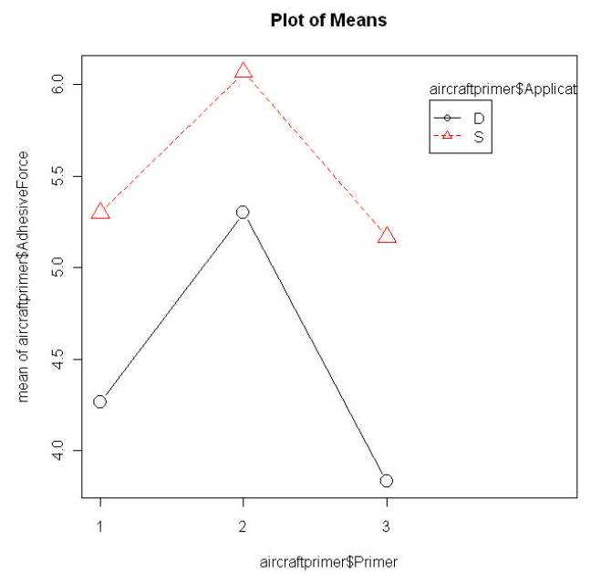

23. Two-way analysis of variance#
The natural extension to the analysis in the previous section is to consider data classified by two variables of interest. Now the rows as well as the columns represent levels of some experimental factor.
For example, an agricultural experiment to test a variety of wheat might involve measuring the yield obtained in each of three areas in three consecutive years, with perhaps four plots (i.e., replications) in each area. The data might look as follows:
Area 1 |
Area 2 |
Area 3 |
|
|---|---|---|---|
Year 1 |
14.2 |
17.2 |
15.3 |
14.4 |
18.1 |
14.9 |
|
17.5 |
15.9 |
16.0 |
|
16.8 |
17.2 |
17.0 |
|
Year 2 |
14.8 |
17.1 |
15.2 |
13.9 |
18.4 |
15.0 |
|
15.0 |
19.0 |
14.1 |
|
16.2 |
17.6 |
16.8 |
|
Year 3 |
13.9 |
18.5 |
15.6 |
14.1 |
18.2 |
14.8 |
|
15.7 |
17.5 |
14.9 |
|
16.5 |
19.2 |
16.5 |
|
It would be of interest to test whether the yield appears to vary across the areas, and whether the yield seems to differ from year to year. Further, if there are apparent area and year effects, is there evidence of a so-called interaction between the two? That is, does the area effect appear to differ from year to year?
The factors involved in a two-way ANOVA model may naturally be thought of as row and column effects, or as two factors \(A\) and \(B\) with \(c\) and \(r\) levels respectively (or perhaps more logically \(a\) and \(b\) levels respectively).
23.1. The general two-way model#
Let our two-way table consist of \(c\) columns and \(r\) rows, with \(m\) replications in each cell. Denote the \(k\) th replicate in the \(j\) th row of the \(i\) th column by \(y_{i j k}\). Then the general model assumes that
in which
\(\mu\) is the expected value of \(\bar{y}\), the overall mean across the entire table,
\(\alpha_{i}\) is the effect of the \(i\) th column, \(i=1, \ldots, c\),
\(\beta_{j}\) is the effect of the \(j\) th row, \(j=1, \ldots, r\),
\((\alpha \beta)_{i j}\) is the row-column interaction effect,
\(\varepsilon_{i j}\) are independent error variables, assumed to be from the \(N(0, \sigma)\) distribution for some \(\sigma^{2}\).
A quick rough-and-ready graphical check to see whether or not it looks likely that interaction terms should be included in the model is to plot the cell means for each row (or column, it makes no difference), then join together the means for each column. Intersecting of lines may suggest that there is significant interaction, that is, the differences between the column effects may not be same in each row.
23.2. The “no interaction” model#
To begin we will describe in some detail the case where we assume that there is no significant interaction. So the \(i j\) terms \((\alpha \beta)_{i j}\) can be removed from the model. To make the formulae easier, we assume that there is a single replication in each cell, so \(m=1\) in the stated model. In fact in this situation (with only a single replicate per cell) models involving interaction cannot be fitted, being what is called over-parameterized. This means simply that there are more parameters in the model than can be estimated by the data.
The third subscript on each observation can therefore be dropped in this subsection, and our model can be written
for \(i=1, \ldots, c, j=1, \ldots, r\). In a similar fashion to the one-way case, let \(\bar{y}_{i}\). denote the mean in the \(i\) th column and \(\bar{y}_{. j}\) denote the mean in the \(j\) th row.
Remark 6 In a similar fashion to the argument given for the one-way case, we have that
since
and the result follows on replacing the observed values with the values predicted by the model..
Then we can write
Taking the above equation, squaring both sides and then summing over \(j\) and \(i\), we have
\(\sum_{i=1}^{c} \sum_{j=1}^{r}\left(y_{i j}-\bar{y}\right)^{2}=\sum_{i=1}^{c} \sum_{j=1}^{r}\left(\bar{y}_{i \cdot}-\bar{y}\right)^{2}+\sum_{i=1}^{c} \sum_{j=1}^{r}\left(\bar{y}_{\cdot j}-\bar{y}\right)^{2}+\sum_{i=1}^{c} \sum_{j=1}^{r}\left(y_{i j}-\bar{y}_{i \cdot}-\bar{y}_{\cdot j}+\bar{y}\right)^{2} \quad (7)\)
This follows because all cross–product terms cancel out; for example,
and summing the last summation term by term,
So we might write (7) in words as
the last term representing the variation in the data after the row and column effects have been accounted for.
There are now two hypotheses to consider: one for the equality of the column effects, one for the equality of the row effects. We discuss the former, namely the testing of
Having broken down the sum of squares for the data into components of experimental interpretation, the aim is once again to derive a test for \(H_{0}\) using the ratio of two of the sums. Now in testing \(H_{0}\) it is clear that the Between Columns SS should be considered, namely
as it measures the variation between the column means so is likely to be large when \(H_{0}\) is false relative to when it is true.
Due to the \(y_{i j}\) ‘s being Normally distributed, the mean in the \(i\) th column \(\bar{y}_{i}\). is also Normally distributed. The model predicts that this mean is
recalling that \(\sum_{j} \beta_{j}=0\). However, when \(H_{0}\) is true,
for each column \(i=1, \ldots, c\), since the standard deviation of the mean \(\bar{y}_{i}\). is \(\sigma / \sqrt{r}\). Now by remark 1 (putting \(n=c, x_{i}=\bar{y}_{i}, \sigma_{X}^{2}=\sigma^{2} / r\) and \(\bar{x}=\bar{y}\) ) and summing over the rows \(j=1, \ldots, r\), we have
It seems desirable to include the term
in the test, as it measures the variation of the \(y_{i j}\) ‘s with the row and column effects eliminated. The proof that this sum of squares is independent to the first is difficult, as is the fact that
so both assertions are to be taken as read. Now a test for \(H_{0}\) follows by remark 2 , and is given by the fact that
Since the variation in the column means would increase if the column effects are not all the same, if \(H_{0}\) is false the numerator in the fraction above will be inflated, and so the critical region for the test of the null hypothesis is the upper tail of the appropriate \(F\) distribution.
A similar test follows from a similar argument for testing for the equality of the row effects, obtained by comparing
with the \(F_{(r-1),(r-1)(c-1)}\) distribution.
As in the one-way case, the results from the above are usually expressed in an ANOVA table. The sum of squares in the denominator in the test statistic for each test is often referred to as the Error SS.
Example
An experiment was performed by five technicians in each of four different laboratories, the amount of produce (in \(\mathrm{g}\) ) in each case being given in the table below.
Technician |
||||||
|---|---|---|---|---|---|---|
Lab |
1 |
2 |
3 |
4 |
5 |
|
1 |
44 |
46 |
34 |
43 |
38 |
|
2 |
38 |
40 |
36 |
38 |
42 |
|
3 |
47 |
52 |
44 |
46 |
49 |
|
4 |
36 |
43 |
32 |
33 |
38 |
Calculations give the following ANOVA table
Source |
SS |
dof |
MS |
F |
|---|---|---|---|---|
Columns |
159.70 |
4 |
39.92 |
6.70 |
Rows |
347.75 |
3 |
115.92 |
19.45 |
Error |
71.50 |
12 |
5.96 |
|
Total |
578.95 |
19 |
To test whether the technicians are the same (i.e., whether the column effects are identical, \(H_{0}: \alpha_{i}=0, i=1, \ldots, 5\) in our notation), from the above table we calculate the column mean square as
We compare this with the \(95 \%\) point on the \(F_{4,12}\) distribution, which is 3.26 . Since \(6.70>3.26\), we would reject the null hypothesis that the technicians produce the same results, at the \(5 \%\) level.
Similarly, a test of whether the lab effects are identical tests the null hypothesis \(H_{0}: \beta_{1}=\beta_{2}=\beta_{3}=\beta_{4}\) in our notation. The test statistic is
and would be consistent with the \(F_{3,12}\) distribution if \(H_{0}\) is true. Since \(F_{3,12}(0.95)=3.49\), the null hypothesis is rejected at the \(5 \%\) level.
23.3. Interaction models#
Recall that the general model assumes that
where the term \((\alpha \beta)_{i j}\) indicates the interaction between factor \(A\) and factor \(B\) when these factors are at levels \(i\) and \(j\) respectively. Now assuming
for all choices of \(i\) and \(j\) is equivalent to all of the following statements:
It is defined that there is no interaction between \(A\) and \(B\).
The effects of \(A\) and \(B\) are defined to be additive.
The difference between any two levels of \(A\) is the same at all levels of \(B\).
The difference between any two levels of \(B\) is the same at all levels of A.
In defining the model the parameters are constrained in the following way:
Questions naturally arise in hypothesis testing about which if any of the parameters involved are zero. Note there are parameters here of three types: for factor \(A\), for factor \(B\) (representing so-called main effects) and for interactions.
It can be seen that for each \(i\) and \(j\) the model predicts that \(\bar{y}_{i j .}-\bar{y}_{i . .}-\bar{y}_{\cdot j .}+\bar{y}\) equals
So the statistic \(\bar{y}_{i j}-\bar{y}_{i . .}-\bar{y}_{\cdot j .}+\bar{y}\) provides an unbiased estimate of the interaction term \((\alpha \beta)_{i j}\). As in the additive model case, the statistics \(\bar{y}, \bar{y}_{i .}-\bar{y}\) and \(\bar{y}_{\cdot j} .-\bar{y}\) provide unbiased estimates of \(\mu, \alpha_{i}\) and \(\beta_{j}\) respectively, for all choices of \(i\) and \(j\).
Now it may be sensible to have, for example, \(\beta_{j}=0\) for all \(j\) and \((\alpha \beta)_{i j}=\) 0 for all \(i\) and \(j\). However, a model that sets \(\beta_{j}=0\) for all \(j\) but includes non-zero interaction terms is very unlikely to be sensible, since it would implicitly state that factor \(B\) can have an effect at different levels of \(A\) but that these effects average to zero over the levels of \(A\) chosen in the experiment. Hence there should be a natural hierarchy when assessing models in twoway ANOVA: with very rare exceptions, when interaction terms are included related main effect parameters should also be incorporated. This idea extends when considering multi-way ANOVA.
Great care should be taken when interpreting main effects in the presence of interaction. When two factors \(A\) and \(B\) interact, it makes little sense to refer to the “effect of factor \(A\) “. At most one could refer to how \(A\) affects the response on average at a particular level of factor \(B\). In short, the presence of a non-zero interaction term \((\alpha \beta)_{i j}\) means that both \(A\) and \(B\) affect the response, but not independently.
In order to test for interaction, we require there to be replication under each set of experimental conditions. Only then can we assess the variation in the response under each set of conditions. Ideally for analysis the experiment is balanced, in the sense that there are equal numbers of replications under each experimental condition, \(m>1\) say. With the \(k\) th replicate in the \(j\) th row of the \(i\) th column denoted by \(y_{i j k}\), the ANOVA table in a balanced twofactor experiment is as below:
Source |
\(\mathrm{SS}\) |
\(\mathrm{dof}\) |
|---|---|---|
Columns |
\(\sum_{i, j, k}\left(\bar{y}_{i . .}-\bar{y}\right)^{2}\) |
\(c-1\) |
Rows |
\(\sum_{i, j, k}\left(\bar{y}_{\cdot j \cdot}-\bar{y}\right)^{2}\) |
\(r-1\) |
Interaction |
\(\sum_{i, j, k}\left(\bar{y}_{i j \cdot}-\bar{y}_{i . .}-\bar{y}_{\cdot j .}+\bar{y}\right)^{2}\) |
\((r-1)(c-1)\) |
Error |
\(\sum_{i, j, k}\left(y_{i j k}-\bar{y}_{i j .}\right)^{2}\) |
\(r c(m-1)\) |
Total |
\(\sum_{i, j, k}\left(y_{i j k}-\bar{y}\right)^{2}\) |
\(r c m-1\) |
The mean squares, as usual, are the sums of squares divided by their degrees of freedom, and averages are over all subscripts suppressed by “.”. F ratios are defined by dividing the corresponding mean square by the Error MS, as earlier.
Example
Primer paint is applied to aircraft wings by either dipping or spraying. Three types of primer paint were tested in an experiment that involved three replications under each method of application. After the primer was applied in each case a finishing paint was coated on, and the adhesive force of the primer was measured. The adhesive forces measured are tabulated below:
| Primer type | Application method | ||
|---|---|---|---|
| Dipping | Spraying | ||
| 1 | 4.0, 4.5, 4.3 | 5.4, 4.9, 5.6 | 28.7 |
| 2 | 5.6, 4.9, 5.4 | 5.8, 6.1, 6.3 | 34.1 |
| 3 | 3.8, 3.7, 4.0 | 5.5, 5.0, 5.0 | 27.0 |
| 40.2 | 49.6 | 89.8 | |
Below is a plot of means for the above data:

The above suggests both application method and primer type affect the response, but there is no interaction between the factors. Using software or otherwise, the ANOVA table for these data can be computed:
Source |
\(S S\) |
dof |
\(M S\) |
\(F\) |
|---|---|---|---|---|
Application method |
4.909 |
1 |
4.909 |
59.70 |
Primer type |
4.581 |
2 |
2.291 |
27.86 |
Interaction |
0.241 |
2 |
0.121 |
1.47 |
Error |
0.987 |
12 |
0.0822 |
|
Total |
10.718 |
17 |
Now \(F_{1,12}(0.95)=4.75\) and \(F_{2,12}(0.95)=3.89 ;\) we can see that we would not reject the hypothesis that there is no interaction present between application method and primer type. Moreover we can then reject the null hypothesis that the application method has no affect on adhesive force, and indeed reject the hypothesis that primer type has no affect on adhesive force.
Remark 7 The models we have discussed in this chapter are what are termed fixed effects models. The column and row effects are all deemed to be fixed, but unknown, constants. Random effects models, on the other hand, are superficially rather similar, but consider the effect of being in a particular column or row to be a random variable. Such models are often somewhat more realistic, but are rather harder to analyze in some respects.